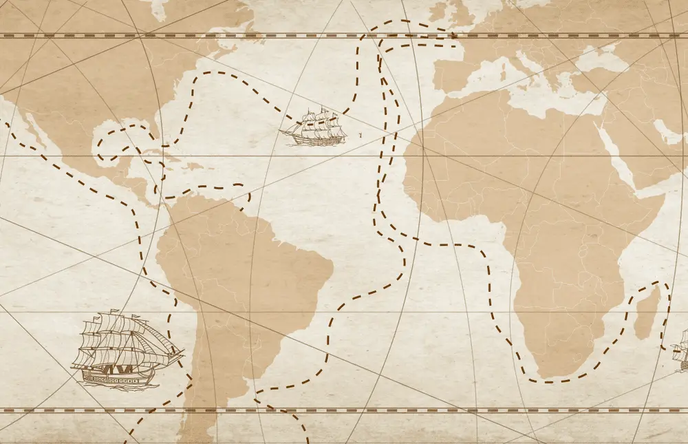

L'invention du bateau remonte à plusieurs milliers d'années, plus précisement 120000 ans, et correspond au besoin que l'homme a très tôt eu de pouvoir se déplacer sur l'eau, les premiers bateaux ont été construits au Néolithique. Les premiers navigateurs utilisaient comme voile des peaux de bêtes ou des toiles végétales tressées, tendues au bout de perches. Les égyptiens sont une des civilisations qui durant l'histoire construisaient des voiliers remarquables et parfaits, cependant ceux-ci n'avaient pas encore de gouvernails, contrairement aux bateaux retrouvés en Chine qui ont des gouvernails depuis le premier siècle avant notre ère.
Il existe aujourd'hui, deux grandes catégories de régates : la « régate en flotte », et le « match racing », où seulement deux bateaux s'affrontent. Les compétitions de longue distance en haute mer ne sont pas des régates mais des courses au large. Parmis les courses aux large les plus célèbres, Le Vendée Globe, ce tour du monde en solitaire dont le départ se trouve aux Sables-d'Olonnes , où les skippeurs naviguent sur des Imoca, une autre course française est La Route du Rhum.
En France, il existe énormément de clubs de voile, on peut en trouver sur tout le littoral français, et même sur des plans d'eau, comme on peut le voir dans la ville de la Flèche au lac de la Monnerie. La plupart de ces clubs sont reliés à la Fédération Française de Voile (FFV). Tout dépend du club concernés mais on peut y pratiquer du catamaran, du pico, de l'optimist, de la planche à voile, du paddle et même du longe côte ! Il y en a pour chaque tranche d'âge, que ce soit cours ou location, chacun peut y trouver ce qu'il souhaite.
Retour en haut ↑